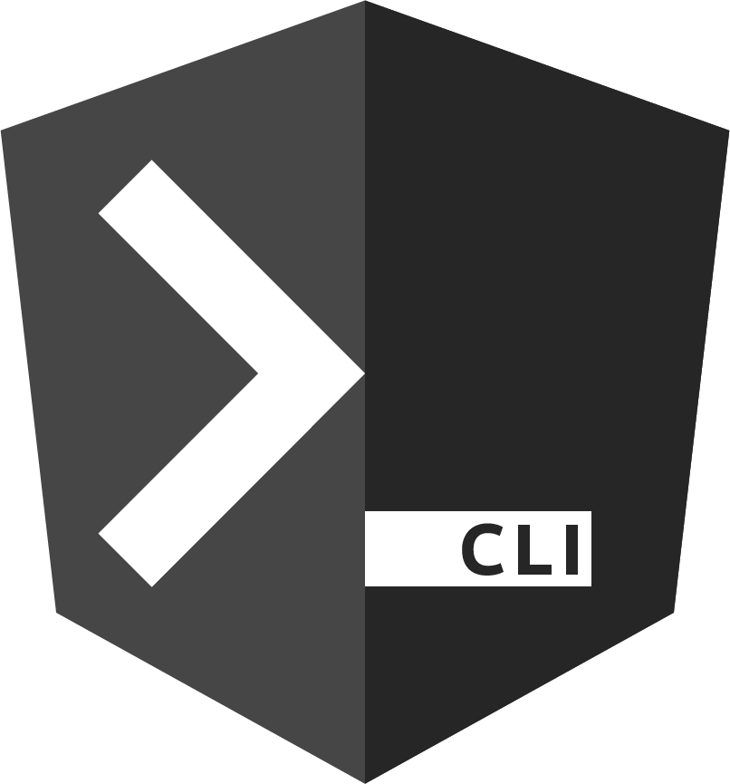

I'm a Cybersecurity Professional
Hi, I’m Michael Kohronas, a Cybersecurity Professional with expertise in Governance, Risk, and Compliance (GRC), Security Engineering, Operations, and Ethical Hacking. During my internship at FOX Corporation, I enhanced security by mitigating risks through data analysis, improving IAM systems with tools like CrowdStrike and Active Directory, and collaborating on critical challenges across teams. I’ve also gained hands-on experience in Penetration Testing, Incident Response, and Security Architecture. Proficient in tools like Wireshark, Nessus, and Okta, and familiar with frameworks like NIST 800-53 and PCI DSS, I specialize in risk assessments, policy development, and secure system architectures. I’m passionate about solving complex problems and a dvancing cybersecurity in an ever-evolving landscape.


IT & Cybersecurity Portoflio & Experience
Fullsail Information Technology Course Catalog
Fullsail Cybersecurity Course Catalog
Experience:
Risk Analysis and Mitigation: Identified and mitigated risks through dataset analysis, enhancing company-wide security measures.
Memberships & Certifications
Certifications:
- Security+ (Exam Scheduled)
- CEH (Studying)
Memberships
- ISACA
Achievements
- 2x Course Director Award
Events & Activities
- Remedy Web3 Ethical Hacking Competition
Information Technology
Skills:
- Operating Systems: Windows, Windows Server, MacOS, Linux
- Networking: Networking: TCP/UDP Protocols, OSI Model, IP Addressing, Network Topology, Device Management
- System Virtualization: Create and Manage a fleet of virtual machines
- Project Management: Change Management, IT service workflows
- System Administration: Active Directory, Email Server Setup, Web Software Configuration
- Troubleshooting: Root Cause Analysis, Performance Monitoring, Issue Esclation
Tools:
- Operating Systems: CLI, CMD, Windows Event Viewer
- Networking: WireShark
- Virtualization: ProxMox, VMWare
- Ticketing Software: ServiceNow
- Scripting: Python

Project Management
Project & Network Setup
This document outlines a comprehensive network system implementation project for a law firm, detailing hardware and software specifications, network configurations, and procedural steps for setting up a secure and efficient IT infrastructure. It includes a project scope, objectives, detailed deliverables, IP network design, and cost analysis, ensuring scalability and productivity improvements for the firm.
Project PDF
Configuration Management
Secure Wordpress Setup
Through the Marconi Law Firm project, I designed, implemented, and secured a complete IT infrastructure, including Docker-based services, a LAMP stack, WordPress deployment, and Azure-based virtual networks. I applied advanced technical skills in network design, security hardening, and Defense-in-Depth while refining my ability to troubleshoot, validate configurations, and present documentation and solutions.
Project PDF
Cloud Technology
Microsoft Azure Setup
This assignment involves configuring and managing virtual network infrastructure in Azure by provisioning virtual networks, setting up virtual machines, implementing peering connections, and configuring a load balancer with NAT rules. It also includes deploying an Active Directory Domain, verifying resource connectivity, and ensuring all configurations are operational, followed by cleanup and deletion of resources.
Project PDF
Configuration Management
Package Managers
In this project, I demonstrated proficiency with package managers like Homebrew and Pip by installing and configuring tools such as HTOP, Midnight Commander, and Speedtest CLI for system monitoring, file management, and performance testing. This hands-on experience enhanced my command-line skills, deepened my understanding of software dependency management, and reinforced best practices for system optimization and automation in modern IT environments.
Project PDF
File Shares
Samba Server
In this project, I configured a Samba server on Ubuntu to enable secure, cross-platform file sharing, including creating users, managing permissions, and setting up shared directories. I verified functionality by accessing resources from both Linux and Windows systems, ensuring secure and efficient file sharing. This experience strengthened my skills in server configuration, user management, and troubleshooting, aligning with enterprise IT and system administration requirements.
Project PDF
Database Setup
MYSQL
In this project, I installed and configured a MySQL database (MariaDB), integrated it with Python using MySQL Connector, and automated database management tasks through scripting. This experience strengthened my skills in database administration, Python scripting, and system management, supporting scalable and efficient IT operations.
Project PDF
Scripting
Ansible & Powershell
In this project, I leveraged Ansible and PowerShell to automate system configuration and management across multiple virtual machines, including LAMP stack deployment and server provisioning. This experience enhanced my skills in automation, scripting, and cross-platform system administration to optimize IT operations.
Project PDF
Active Directory
Load-Balancing
In this project, I implemented a Network Load Balancer to distribute traffic across servers, ensuring high availability and reliability for a web application. This experience strengthened my skills in load balancing, Active Directory integration, and scalable infrastructure design for enterprise environments.
Project PDFSecurity Architecture & Engineering
Skills:
- Cloud Security: Setup & Secure Azure & AWS
- Infrastructure Design: Secure System and Netowrk Architecture, System Hardening, Zero Trust implementation, Secure Software Lifecyle, Secure System Lifecycle
- Configuration Management: Ansible, Docker, API Integration
- Cryptography: Symmetric & Asymmetric encryption, PKI, Digital Trust models
- Vulnerability Management: Identifying, assessing, and mitigating vulnerabilities
- Visualization: Data organzation, Dashbaords, Security metrics
Tools:
- Vulnerabilitiy Management: Nessus & Qualys & burpe suite
- Remidiation: Crowdstrike
- Security Graphs: Axonius
- Web Security Tools: Akamai, Cloudflare
- Identity Access Management: OKTA & Azure AD

IAM & Asset Management
Azure IAM & Asset Management
Through this project, I completed Azure learning modules on secure Identity and Access Management (IAM), gaining knowledge in user and group management, multifactor authentication, and device identity management. This experience provided a strong foundation in Azure AD security practices for future practical application.
Project PDF
Identity Access Management
OKTA IAM Basics
This training strengthened my understanding of Okta’s product portfolio and its application in modern IAM practices. It provided practical insights into secure user authentication, identity governance, and seamless application integrations, essential for administrators, developers, and IAM professionals.
Okta Basics
Identity Access Management
AWS
Configured AWS IAM to manage user access and permissions, enhancing security and operational efficiency. Key achievements included implementing least-privilege policies, enabling Multi-Factor Authentication (MFA), and securing resources by defining role-based access. This project demonstrated expertise in IAM, policy creation, and maintaining secure cloud infrastructure.
Project PDF
Cryptography
JCryptTool
I completed a hands-on cryptography project that focused on understanding and analyzing encryption techniques and vulnerabilities. Utilizing tools like JCryptTool, OpenSSL, and CyberChef, I explored the theoretical and practical aspects of cryptographic security.
Project PDF
Vulnerabilitiy Scanning
Nessus
Conducted authenticated and unauthenticated scans to identify and analyze system vulnerabilities. Reviewed findings to prioritize mitigation of critical issues, including outdated protocols and SMB signing weaknesses. This project enhanced skills in vulnerability management and security assessment.
Project PDF
Vulnerability Scanning
Qualys
Conducted an SSL/TLS security assessment comparing a well-secured site and a less-secure site to evaluate certificate configurations, protocol support, and encryption strength. Using Qualys SSL Labs, I identified critical differences in configurations such as TLS protocol versions, cipher suites, and server security posture, highlighting vulnerabilities like outdated protocols and weak encryption. This project deepened my understanding of secure communication channels and the significance of robust SSL/TLS configurations in maintaining secure web applications.
Project PDF
Backup Management
Carbonate
Configured cloud and local backups using Carbonite for secure, redundant data storage. Assessed risks like data leakage and cloud outages while emphasizing security measures, including pre-execution file scans. Demonstrated the importance of redundancy to mitigate threats like ransomware and system failures.
Project PDF
Network Scanning
NMAP
Conducted comprehensive network scans using Nmap to identify active hosts, open ports, and service versions within a subnet. Performed detailed SYN Stealth Scans and service enumeration on multiple hosts, including tasks to identify open ports and assess service details like HTTP, FTP, and DNS.
Project PDF
Edge Protection
Canary Setup
Deployed Canary Tokens across various environments to detect unauthorized access, analyzed potential bypass techniques like DNS blocking, and implemented strategies to enhance detection capabilities using diverse token types such as PDFs and AWS keys.
Project PDF
Risk Mitigation
Patch Management
This project focused on mitigating non-patching vulnerabilities through network segmentation, access control hardening, enhanced monitoring, and strict firewall rules. Systems were updated where possible, while unsupported ones were isolated and monitored. Key measures included disabling SWEET32 ciphers, restricting unquoted paths, and securing critical infrastructure like DNS, mail servers, Nessus, and Splunk.
Project PDFGovernance, Risk, and Compliance (GRC)
Skills:
Governance: Policy/Procedure Development, SAQ Audits, Regulatory Compliance Audits (NIST, PCI DSS, HIPAA, ISO)
Risk Management: FAIR, Gap Analysis, Threat Modeling, CIS Controls
Compliance Frameworks: NIST Frameworks, PCI DSS, HIPAA, SOX, COBIT, FISMA
Audit Preparation: Compliance Readiness, Documentation Review
Maturity Models: Security Maturity Assessments
Tools:
- Vulnerabilitiy Management: Nessus & Qualys & burpe suite
- Remidiation: Crowdstrike
- Security Graphs: Axonius
- Web Security Tools: Akamai, Cloudflare
- Identity Access Management: OKTA & Azure AD

Governance
Security Plan Development
Created a comprehensive Security Plan for SnowBe Online to enhance the organization's data security posture. The plan addressed key areas, including access control, data classification, mobile device management, and PCI DSS compliance. It outlined roles, responsibilities, and procedural standards, such as password policies and account creation guidelines. This project demonstrated proficiency in developing actionable security frameworks, aligning with NIST SP 800-53 standards, and implementing effective risk mitigation strategies to ensure regulatory compliance and organizational resilience.
View PDF
Governance
Security Policy Development
Developed a comprehensive PCI DSS compliance policy for SnowBe Online, addressing key areas such as encryption, firewall configurations, access management, and incident response. The policy defined roles, secure data handling practices, and guidelines for network scanning, patch management, and penetration testing to ensure payment card data security and regulatory compliance. This project demonstrates expertise in regulatory frameworks, risk management, and secure system architecture.
View PDF
Governance
Security Procedure Development
Developed a comprehensive Password Procedure for SnowBe, detailing standards for strong password creation, reset protocols, and management of compromised accounts. The procedure includes roles and responsibilities for enforcement, exception handling, and version tracking to ensure adaptability and security. This initiative strengthens password integrity, reduces vulnerabilities, and supports organizational compliance.
View PDF
Compliance
PCI DSS auditing
As part of the PCI DSS compliance process, I completed the SAQ-D questionnaire for SnowBe Online, a Level 2 merchant processing over 1.2 million transactions annually. This project involved determining the appropriate compliance level, identifying the applicable SAQs (SAQ-D Merchant/Service Provider and SAQ P2PE), and detailing the required actions, such as enhancing access controls, inspecting payment terminals, and conducting vulnerability scanning. The work ensured adherence to PCI DSS standards, safeguarding sensitive cardholder data while supporting the organization's operational needs.
View PDF
Secure Life Cycle
Secure Software Development Lifecycle
This project focused on evaluating and selecting the most suitable framework for secure software development at SnowBe. After a comprehensive analysis, the team recommended the Secure Software Development Framework (SSDF) over the Microsoft Security Development Lifecycle (MSDL) due to SSDF's emphasis on embedding security throughout the development process. The project highlighted the importance of secure coding practices, agile methodologies, and DevSecOps integration to address vulnerabilities proactively. Key deliverables included a detailed comparison of frameworks, an outline of team roles and responsibilities, and a proposed methodology to ensure SnowBe's software aligns with security and business objectives.
View PDF
Secure Life Cycle
Secure System Development Lifecycle
Collaborated on a comprehensive system life cycle plan utilizing the NIST 800-160 framework to integrate security across all phases of system development. Prioritized acquisition, planning, and risk management processes to enhance supply chain security and ensure operational integrity. Applied systematic risk assessment, validation, and monitoring techniques to address vulnerabilities and meet organizational security requirements. This project demonstrated a structured approach to lifecycle management, aligning technical processes with business objectives to maintain a robust and secure system environment.
View PDF
Security Models
Security Maturity Model
This project involved evaluating and prioritizing the security domains of a fictitious company, SnowBe, using a Security Maturity Model. By analyzing key areas such as Risk Management, Configuration Management, Access Control, and Physical Protection, I identified gaps and recommended improvements to enhance the organization’s security posture. The work included categorizing practices, defining actionable next steps for each domain, and ensuring alignment with best practices like the principle of least privilege and robust configuration tracking. This experience solidified my ability to perform comprehensive security assessments and develop strategic mitigation plans tailored to organizational needs.
View PDF
Risk assessment
Gap Analysis & CIS Controls
In this project, I analyzed a malware breach at Luigi's Inc., identifying vulnerabilities such as unauthorized devices, insecure configurations, and delayed response times. Using CIS Controls v8, I recommended measures including asset inventory management, encryption, access controls, continuous vulnerability assessments, and security awareness training. These safeguards strengthened the organization's security posture, preventing future breaches and aligning operations with industry best practices.
View PDFSecurity Operations & Red Teaming
Skills:
- Threat Analysis: Threat Hunting, Indicators of Compromise, Real-time intelligence
- Incident Response: Mitigation Strategies, Logging, Alert Analysis, Incident Management
- Monitoring: SIEM Systems, SOAR Systems, Alert Processes, Log Correlation
- Forensics: Data Recovery, Malicious Activity Analysis
- Offensive Security: Exploitation Techniques, Network Testing & Software Testing
- Penetration Testing: Vulnerability Discovery, Exploit Analysis, Methodologies
- Reverse Engineering: Application & System Vulnerability Analysis
- Training & Hands-on Practice: HackTheBox, TryHackMe, OverTheWire
Tools:
- Incident Response Tools: Crowdstrike
- Threat Intelligence Tools: Mitre Att&ck, Shodan, OSINT
- SIEM Systems: Active Directory Logs, Sumo Logic
- Pentesting: Kali Linux, Metasploitable
- OSINT: Sherlock
- Network Security: Netcat, Wireshark, & Burpe Suite
- Software Security: OWASP ZAP
- Vulnerability Scanning: Nessus, Qualys
- Training Platforms: OWASP Juice Shop, DVWA
Attack Types & Reports
DBIR Report
Analyzed the 2022 DBIR to identify key cybersecurity trends, focusing on prevalent threats, targeted industries like finance, healthcare, and entertainment, and critical vulnerabilities in servers, user devices, and human factors. Demonstrated the ability to interpret complex data, highlighting risks such as social engineering and supply chain compromises, and applied findings to reinforce proactive security strategies.
Project PDF
Attack Types & Analysis
Backdoors, Phishing, and Cookie Hijacking
This project involved analyzing various cyberattack methods, including backdoor attacks, Facebook account hacking, and cookie hijacking. For each attack type, the project explored the goals, potential targets, and practical prevention strategies, emphasizing the importance of proactive cybersecurity measures such as regular system updates, two-factor authentication, VPN usage, and security training. The analysis also provided future-focused recommendations, including implementing zero-trust models, improving behavioral analytics, and adopting strict transport security protocols. This work highlights expertise in identifying vulnerabilities and designing effective defense mechanisms to safeguard systems and user accounts.
Project PDF
Web-App Pen-Testing
DVWA
During this project, I analyzed the Damn Vulnerable Web Application (DVWA) to identify vulnerabilities and sensitive data exposure. Key findings included database credentials and sensitive information leaked through improperly secured PHP files, such as login.php?-s and config.inc.php~. I emphasized the importance of testing backup PHP files marked with a "~" as they are often overlooked by IT teams. The project demonstrated my ability to perform thorough directory scans, identify misconfigurations, and highlight potential exploitation paths, reinforcing my skills in vulnerability assessment and secure web application practices.
Project PDF
Remediation Scanning
Nessus & Windows Firewall
In this project, I conducted a detailed vulnerability remediation exercise using Nessus to scan a Windows 7 virtual machine for security weaknesses. I performed initial and follow-up scans to analyze the impact of security configurations, including enabling the Windows Firewall and creating custom firewall rules to block critical ports (445 and 139). By addressing vulnerabilities related to the Server Message Block (SMB) protocol and re-running the scans to validate remediation efforts, I demonstrated proficiency in identifying and mitigating vulnerabilities. This project highlighted my ability to leverage security tools and implement defensive measures to strengthen system security.
Project PDF
CVE Assessment
NVD Calculator
Conducted a detailed analysis of three CVEs, including a MySQL SQL Injection vulnerability (CVE-2013-0375), a Remote Code Execution vulnerability in Oracle Outside In Technology (CVE-2016-5558), and a hypothetical web server exploit. Evaluated attack vectors, complexity, required privileges, and impacts on confidentiality, integrity, and availability. Presented findings with CVSS scores, highlighting mitigation strategies and real-world implications. This project enhanced my understanding of vulnerability management and secure system analysis.
Project PDF
Incident Management
Incident Report
This project involved conducting an in-depth analysis of a penetration testing report for Full Sail University's platform. The testing revealed critical vulnerabilities, including broken access controls and injection flaws, which posed risks to user data, system integrity, and compliance with regulations. The analysis outlined the potential impacts, such as financial loss, public relations damage, and compromised data integrity. Mitigation strategies, including implementing RBAC, least privilege principles, secure APIs, and input validation, were proposed to remediate the vulnerabilities and enhance overall security posture. This project highlights expertise in incident analysis, regulatory considerations, and effective remediation planning.
Project PDF
OWASP Top 10
Owasp Juice Shop
In this project, I explored the OWASP Juice Shop platform to identify and exploit common web application vulnerabilities. Using tools like Docker, I navigated challenges such as DOM-based XSS, password strength weaknesses, and error handling flaws. This hands-on experience enhanced my skills in penetration testing, vulnerability assessment, and understanding secure web application practices, aligning with ethical hacking and cybersecurity standards.
Project PDF

Forensics
WireShark & Shodan Analysis
Conducted in-depth packet analysis using Wireshark, examining various network protocols, including FTP, SNMP, and HTTP. Identified critical security vulnerabilities, such as plaintext credential transmission and exposed community strings, highlighting risks like device mapping, unauthorized access, and traffic interception. Leveraged the Shodan.io platform to identify publicly accessible devices, assess risks, and explore remediation strategies for SCADA systems, RDP, and VNC vulnerabilities. Demonstrated expertise in protocol analysis, threat identification, and network security best practices, emphasizing the importance of secure configurations and proactive monitoring.
Project PDF
Red Team
Kali Linux
This project focused on leveraging Kali Linux and Metasploitable to explore ethical hacking techniques. Using Kali Linux, I conducted reconnaissance by identifying IP addresses, performing Nmap scans, and analyzing Metasploitable's vulnerabilities. I utilized Metasploit's tools to exploit Samba vulnerabilities, configure payloads, and execute post-exploitation modules. Additionally, I used John the Ripper to decrypt user credentials from hashed data, showcasing my skills in penetration testing, vulnerability exploitation, and password cracking. This hands-on experience solidified my understanding of offensive security methodologies and toolsets.
Project PDF
Over The Wire
Bandit 0-19
Participated in the OverTheWire wargame challenges, successfully navigating through multiple levels to identify and exploit vulnerabilities in a controlled environment. This exercise enhanced my understanding of network scanning, file decompression, and private key usage for secure connections. The challenges involved real-world scenarios, such as locating passwords on servers and leveraging open ports to gain access, reinforcing practical skills in ethical hacking and penetration testing.
Project PDF